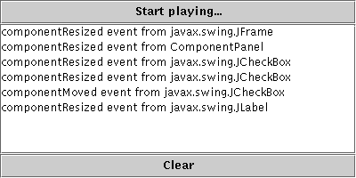

Feedback Form
|
|
Start of Tutorial > Start of Trail > Start of Lesson |
Search
Feedback Form |
One or more component events are fired by aComponentobject just after the component is hidden, made visible, moved, or resized. An example of a component listener might be in a GUI builder tool that's displaying information about the size of the currently selected component, and that needs to know when the component's size changes. You shouldn't need to use component events to manage basic layout and rendering.The component-hidden and component-shown events occur only as the result of calls to a
Component'ssetVisiblemethod. For example, a window might be miniaturized into an icon (iconified) without a component-hidden event being fired.The following example demonstrates component events. The window contains a panel that has a label and a check box. The check box controls whether the label is visible. A text area displays a message every time the window, panel, label, or check box fires a component event.
 [PENDING: New screenshot forthcoming showing sample output.]
Try this:
- Run ComponentEventDemo using JavaTM Web Start. Or, to compile and run the example yourself, consult the example index.
- When the window appears, one or more component-shown events have been fired.
- Click the check box to hide the label.
The label fires a component-hidden event. The panel fires component-moved and component-resized events. The check box fires a component-moved event.- Click the check box again to show the label.
The label fires a component-shown event. The panel fires component-moved and component-resized events. The check box fires a component-moved event.- Iconify and then deiconify the window.
You do not get component-hidden or -shown events. If you want to be notified of iconification events, you should use a window listener or a window state listener.- Resize the window.
You'll see component-resized (and possibly component-moved) events from all four components — label, check box, panel, and frame. If the frame and panel's layout manager didn't make every component as wide as possible, the panel, label, and check box wouldn't have been resized.You can find the demo's code in
ComponentEventDemo.java. Here is just the code related to handling component events:
public class ComponentEventDemo ... implements ComponentListener { static JFrame frame; JLabel label; ... public ComponentEventDemo() { ... JPanel panel = new JPanel(new BorderLayout()); label = new JLabel("This is a label", JLabel.CENTER); label.addComponentListener(this); panel.add(label, BorderLayout.CENTER); JCheckBox checkbox = new JCheckBox("Label visible", true); checkbox.addComponentListener(this); panel.add(checkbox, BorderLayout.PAGE_END); panel.addComponentListener(this); ... frame.addComponentListener(this); } ... public void componentHidden(ComponentEvent e) { displayMessage("componentHidden event from " + e.getComponent().getClass().getName()); } public void componentMoved(ComponentEvent e) { Component c = e.getComponent(); displayMessage("componentMoved event from " + c.getClass().getName() + "; new location: " + c.getLocation().x + ", " + c.getLocation().y); } public void componentResized(ComponentEvent e) { Component c = e.getComponent(); displayMessage("componentResized event from " + c.getClass().getName() + "; new size: " + c.getSize().width + ", " + c.getSize().height); } public void componentShown(ComponentEvent e) { displayMessage("componentShown event from " + e.getComponent().getClass().getName()); } public static void main(String[] args) { ... //Create and set up the window. frame = new JFrame("ComponentEventDemo"); ... JComponent newContentPane = new ComponentEventDemo(); frame.setContentPane(newContentPane); ... } }
The ComponentListener Interface
All of these methods are also in the adapter class,
ComponentAdapter.
Method Purpose componentHidden(ComponentEvent)Called after the listened-to component is hidden as the result of the setVisiblemethod being called.componentMoved(ComponentEvent)Called after the listened-to component moves, relative to its container. For example, if a window is moved, the window fires a component-moved event, but the components it contains do not. componentResized(ComponentEvent)Called after the listened-to component's size (rectangular bounds) changes. componentShown(ComponentEvent)Called after the listened-to component becomes visible as the result of the setVisiblemethod being called.
Method Purpose Component getComponent()Returns the component that fired the event. You can use this instead of the getSourcemethod.
The following table lists the examples that use component listeners.
Example Where Described Notes ComponentEventDemoThis section Reports all component events that occur on several components to demonstrate the circumstances under which component events are fired.
|
|
Start of Tutorial > Start of Trail > Start of Lesson |
Search
Feedback Form |
Copyright 1995-2004 Sun Microsystems, Inc. All rights reserved.